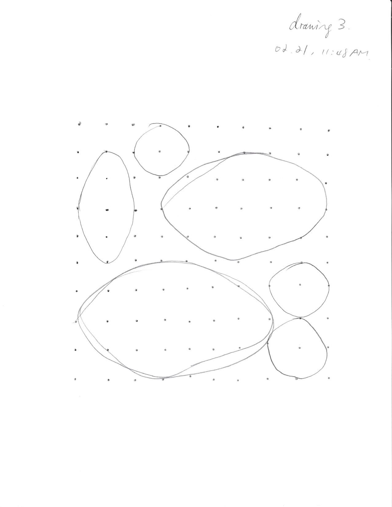

thread
02.02.2022

A mudra(/mu'dra:/); Sanskrit: मुद्रा, IAST: mudrā, "seal", "mark", or "gesture"; Tibetan: ཕྱག་རྒྱ་, THL: chakgya,) is a symbolic or ritual gesture or pose in Hinduism, Jainism and Buddhism.[1] While some mudras involve the entire body, most are performed with the hands and fingers.
this one it is.
reflection here:
on Surf Clubs
- "information should be free"
it should be made accessible and at least shouldn't fry your laptop - "freedom for users"
it's kinda interesting that this article focuses on the browsing journey that people used to enjoy, which allows the extent of autonomy that is inviting and limitless. Example used here was NFTs, but apparently people are creating web-based NFT projects now - community
could be what the functional sites wouldn't prioritise. the del.icio.us site succeeded to do with the tagging interaction, user engagement was fostered by 1.single function 2.archival feature. also theres just no ads or algorithm(filter bubbles) that pushes you away - "why web needs to be sheltered in web"
this could be tangent but another reading from Fred Wilson about how space used to display artworks have significant affects on viewers perspective. he experimented by framing three types of exhibition space in "Room with a view: the struggle between cultural context and context of art": the white cube, the small ethonographic museum, the turn-of-the-century salon space. all pieces presented withou lable. found out surprisingly that not only the viewers were confused but the curators and even the artists were some extent intervened in terms of distinguishing and creating. web should stay perculiar to the format it has always been embedded. - "I understood this as the difference between the thing of beauty that was found online while surfing - an image or ab it of information - and the journey towards a thing. In myeyes, it enabled thinking about an entire conversation as an artwork, instead of a single argument, piece or comment.
updated on structure(mobile, position, myZone)
reflection on:
Jodi's Infrastructure
- like last week's reading the essence of that web shouldn't be displayed in a gallery space for that would bypass the peculiar digitality of web
- -some programmers or engineers think of the machine as a tool to be used in pursuit of some larger design strategy. digitailty is context or condition- it makes sense cause the art that work 'within' the digitality can truly take off from the dependence on the context. and i really like how art of code is portrayed here: art: but code derives its beauty, its very identity, from an analysis of function and its accurate formalization in logical and mathematical structures
- infrastructural modernism: they are technologists who insist that the beauty of code comes from function and elegance but from a different set of virtues - dysfunction and inelegance to be sure, but also confusion and excitement, violence
and energy: the computer as medium:
this reminds me of this reading defining new media that basically, numericial representation and automation are principling, it is truly unique and self-driving devices that reside in every corner in the internet world and its massive capacity gives you the freedom to: make rules and let go of them. jodi's works have to live on the this medium.
W. Bradford Paley, CodeProfiles, 2002
CodeProfiles looks at the computer program as text and visually comments on how code is read by people, written by programmers, and executed by computers. Reflecting on its own construction, the work consists of the code that makes the code visible on the screen. Three points in code space are indicated: the amber line follows the fixation point, tracing how people might read the text, line by line; the white line follows the insertion point and flows like the programmer’s thoughts, calmly in one place then jumping around to make other parts of the code perform; and the green line moves along the execution point of the program, creating wide swaths where the code was executed thousands of times and appearing as a thin thread where the processor rarely visited. W. Bradford Paley thereby foregrounds the conceptual nature of all digital art, which is always driven by a language formulating instructions.

grouping and archiving myZone creations
drawing instruction exercise
drawing 1
- take a pen/pencil/marker and a sheet of 8.5in x 11in paper
- draw a dot(anywhere on the sheet), draw 4 dots(anywhere on the sheet)
- connect the five dots to the first dot
- repeat (2) + (3) for 7 times
- mark your sheet with your name/symbol for documentation
example output
my friend's creation:

drawing 2
- take tools from prepared pen/pencil/marker and a sheet of 8.5in x 11in paper
- draw an heptagon by connecting 7 dots(doesn’t have to be perfect)
- fill the heptagon any method you like
- mark your sheet with your name/symbol for documentation
example output

my friend's creation:
drawing 3
- take a pen/pencil/marker and a sheet of 8.5in x 11in paper
- draw a 10 * 10 grid with dots
- pick a dot on the grid to begin with (the centre)
- draw an ellipse using the other dots on the grid
- repeat (3) and (4) but avoid overlapping the ellipses
- stop the process while 70% of the grid is filled
example output

my friend's creation: